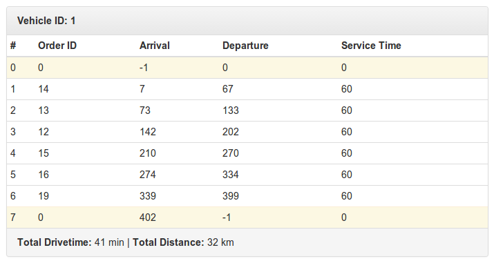

SmartVRP
Another Tour Optimization Experiment
Created by Daniel Kastl / @dkastl

Typical Scenarios
- Sales person need to visit his customers
- City staff needs to visit public assets
- Day care worker needs to visit patients
- Mechanic needs to do repair work on-site
- Craftsmen do installations at various locations
- ... and many more.
The Goal
How can we find the best schedule and route
to visit all our customers or assets?
Can we do this better than ...
- Using a notebook and calendar
- Managing tasks with Excel
- Asking Google Maps or Navitime
Demo
UK: http://demo.smartvrp.com:1337
JP: http://demo.smartvrp.com:3000
Open Source Tools
- Twitter Bootstrap
- Leaflet
- JQuery
- Node.js
- Websockets
- pgRouting
- OSRM
- OSM Data
Vehicles
The Vehicles Table contains the information of the available vehicles that can be utilised in the creation of the route plan.
- A "vehicle" can be seen as a "vehicle-day"
- Option to set a Capacity constraint
Depot
The algorithm supports a "One-Depot" scenario.
- A single location where all vehicles start, and return after the last order.
- Sets the start time for all vehicles.
- Sets the final time for all vehicles.
Orders
The Orders Table contains the information of the location points that have to be visited (tasks, schools, etc.).
- Orders have a location information (lat/lon)
- Orders can have a time constraint during which the order needs to be handled.
- The Service time defines the duration to handle an order.
- Option to define an order load (used for the vehicle capacity).
pgr_vrpOneDepot
Razequl developed a new VRP algorithm during Google Summer of Code 2013.
vrp=# SELECT * FROM pgr_vrpOneDepot(
'SELECT * FROM vorders'::text,
'SELECT * FROM vvehicles'::text,
'SELECT * FROM vdistance'::text,
1 );
(This algorithm is currently available in a pgRouting branch.)

Schedule

What comes next?
- Release the VRP function with pgRouting 2.1
- Enable world-wide coverage
- Publish a developer API
- Provide different response formats
(ie. iCal, JSON, KML, etc.) - Integrate tour planning into
「知らせて.jp」and「すぐレポ」
Thank you!
Interested and want to know more?
- Email: daniel@georepublic.co.jp
- Twitter: @dkastl
- Website: http://georepublic.info